XCode Server를 이용한 CI(continuous integration)
-읽음
CI 란?
CI란 continuous integration의 약자로 지속적 통합을 뜻한다. 작업을 작은 단위로 쪼갠 뒤, 작은 단위로 개발, 지속적으로 통합하는 과정을 통한 개발 방법으로 코드 품질향상, 배포주기 단축을 목표로 한다.
iOS에서의 CI
iOS 앱은 실행파일(.ipa) 하나를 Export 하는데에 인증서, 프로비저닝 등 빌드 과정에 관여하는 변수가 많아 CI를 적용하기가 까다로운 편이다.
작년까지만 해도 Jenkins에 Xcode Plugin을 붙여 빌드를 진행하고 , 그 외 OTA를 위한 manifest, archive, export, OTA 배포까지의 과정은 Shell Script를 이용해 수동으로 작업했다.
물론, 한번 세팅해두면 이후에는 손 볼 일이 거의 없긴하다.
그러던 어느날, 앱 인증서가 만료되어, 프로비저닝과 인증서를 교체해야 하는 일이 생겼다.
Jenkins에서 인증서, 프로비저닝 갱신하기
- Apple developer 사이트에서 새로운 인증서와 프로비저닝을 다운로드 받는다.
- jenkins credential 페이지에서 인증서와 프로비저닝을 업로드 한다.
- 프로젝트 Plugin 에서 새로운 인증서와, 프로비저닝을 선택해준다.
- ipa export 하는 과정에서 프로비저닝 이름을 수동으로 입력해준다.
=> 수동으로 해야할 일이 꽤 많다
사실 프로젝트 1개만 있으면 문제가 없다.
그런데 나는..? 프로젝트가 3개가 있다.. 그것도 dev와 appstore로 구분하면 x2, 총 6개.
이 작업을 하면서, 아 이건 아니다 싶었고 다른 CI툴을 찾아 나섰고.
마침 XCode9 가 등장하면서 XCode Server가 무료로 내장되어 업데이트 되어 XCode Server를 사용해보기로 했다.
XCode Server 설치하기
사실 설치라고 할 게 없다. XCode9 를 설치하면 XCodeServer가 내장되어 있다.
그렇다면 XCode Server를 활성화 시켜보자.
XCode -> Preference -> Server & Bots
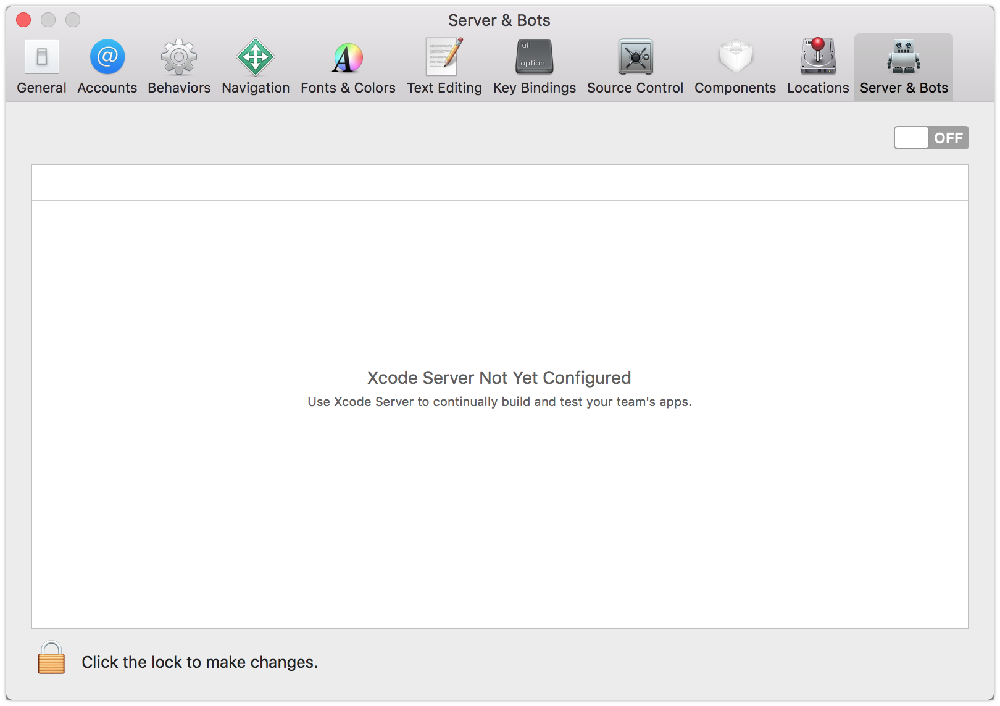
off -> on 으로 활성화 시키자.
XCode Server의 관리자 계정을 설정하고 Next를 누르다 보면
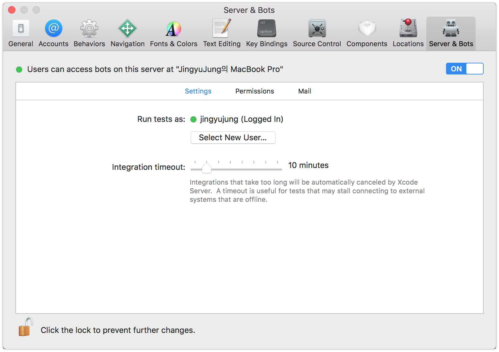
끝
setting : 서버 계정, 빌드 타임아웃 시간 설정permission : 봇을 생성하고 볼 수 있는 권한 설정mail : 빌드 과정에서 메일 알람을 주기 위한 메일 설정
이제 서버가 할 일은 끝났다.
XCodeServer에 접속하기
지금까지는 XCode Server를 활성화 하는 과정이었다.
이제 XCode에 XCode Server를 연동하여 사용하는 과정을 소개한다.
우선 XCode에 XCode Server를 연결한다.XCode -> Preference -> Accounts
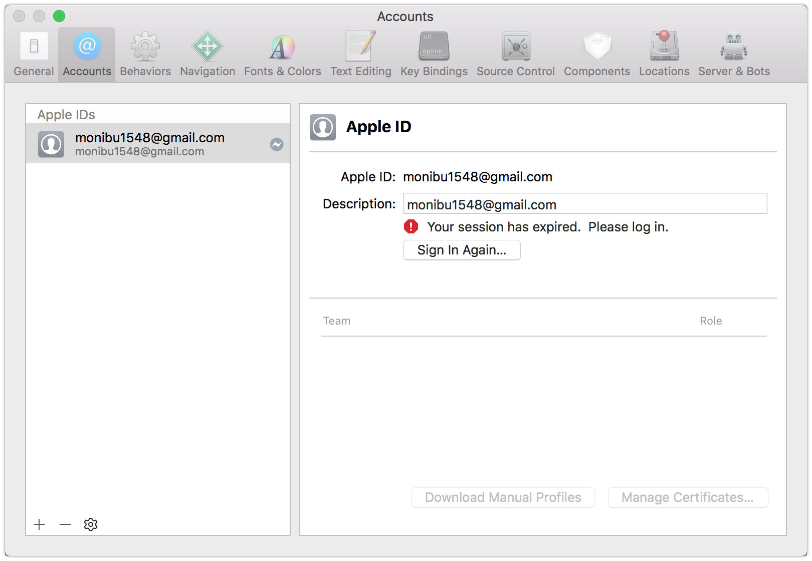
우측 하단의 + 를 눌러보자.
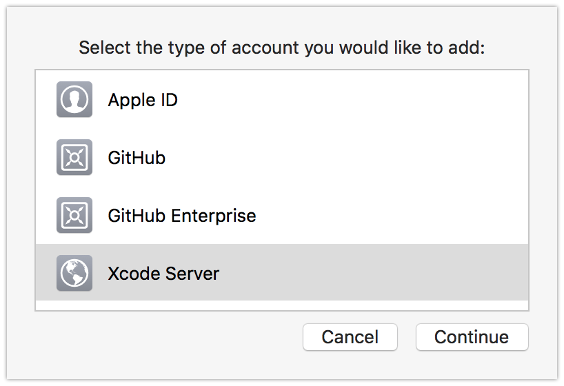
하단의 XCode Server 를 추가할 수 있도록 되어있다.
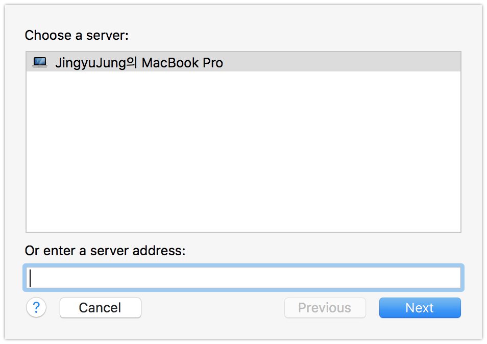
같은 맥에 XCode Server와 XCode를 구동하기 때문에 위 사진처럼 바로 목록이 뜨지만. XCode Server가 원격지에 있다면 ip를 직접 입력해줘야 한다.
그 후 XCode Server에서 권한을 부여받은 계정을 입력해주면 끝!
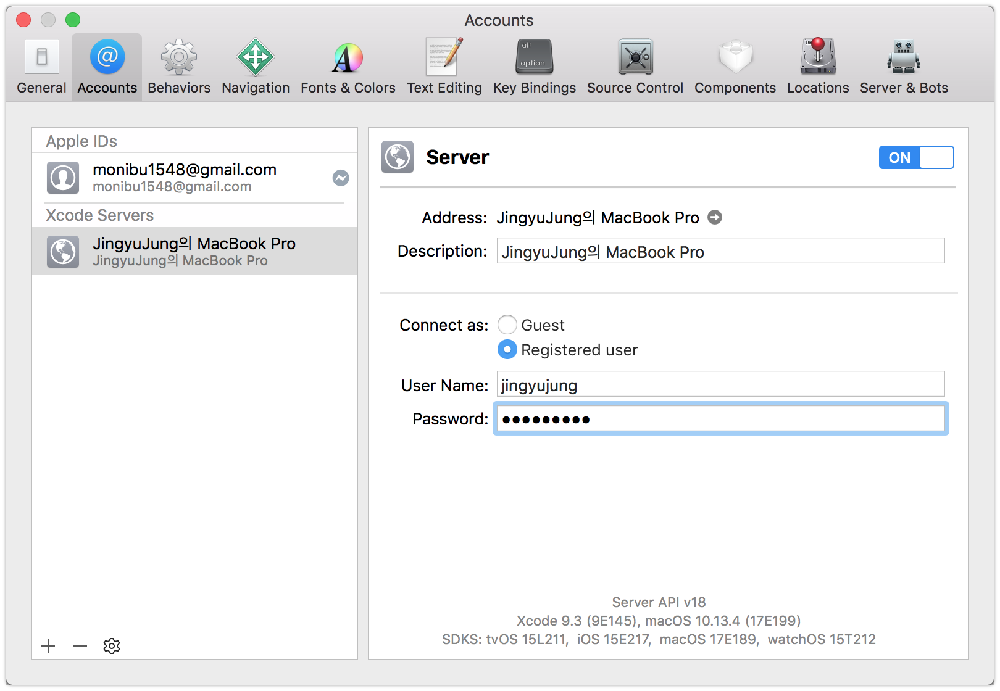
대화상자 하단에 XCode Server의 스펙을 볼 수 있다.
Build Bot 만들기
위 과정을 통해 XCode Server를 정상적으로 추가했다면 Build Bot을 생성할 수 있다.
XCode Server에서는 빌드는 모두 Bot이라는 단위로 실행되며 Bot은 프로젝트 빌드 타겟과 매칭된다고 보면 된다.
이제 Bot을 만들어보자.
XCode에서 Product -> Create Bot... 를 선택한다.
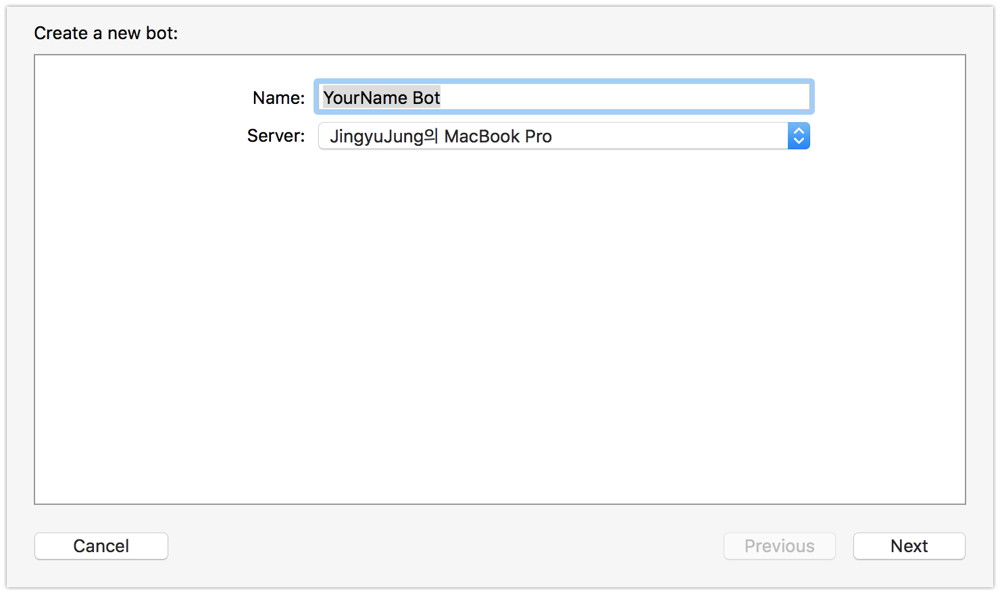
봇의 이름과 봇을 생성할 서버를 선택한다.
봇의 이름은 한글 도 가능하다.
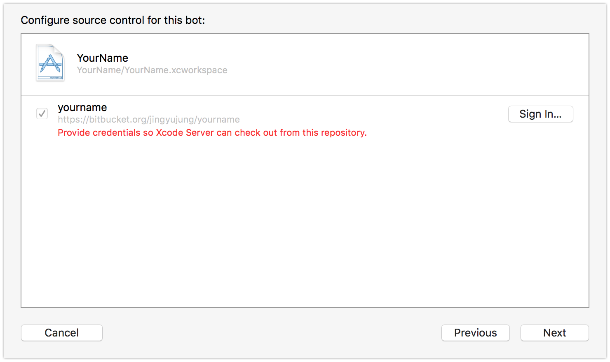
봇을 생성하려는 프로젝트가 git을 사용중이라면 그 내용을 자동으로 긁어온다.
현재 빨간색으로 레포지토리 권한이 없습니다 라고 뜨는데 오른쪽의 Sign in 으로 레포지토리 로그인을 하면 해결된다.
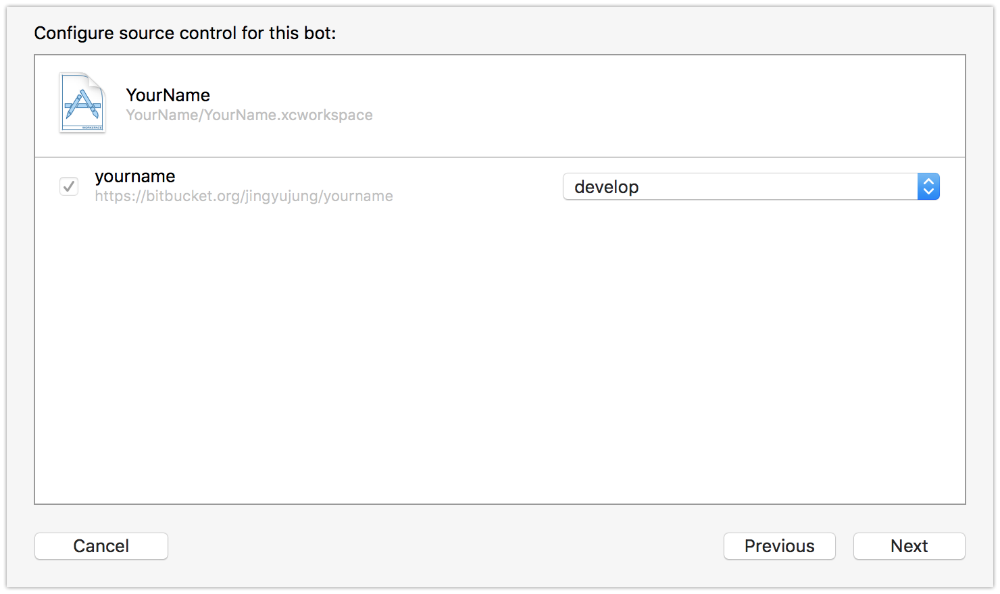
로그인을 완료하면 브랜치를 선택 가능하다. CI에 사용할 브랜치를 선택한다.
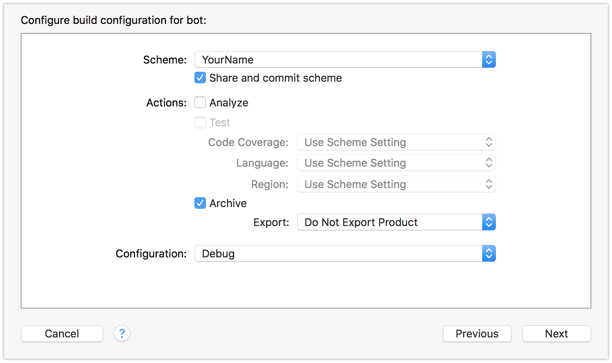
프로젝트의 Scheme, Configuration 을 설정할 수 있으며 Analyze 또는 Test도 선택적으로 수행 가능하다.
Archive도 제공하며 ipa 까지 추출하기 위해서는 별도의 ExportOptions.plist가 필요하다.
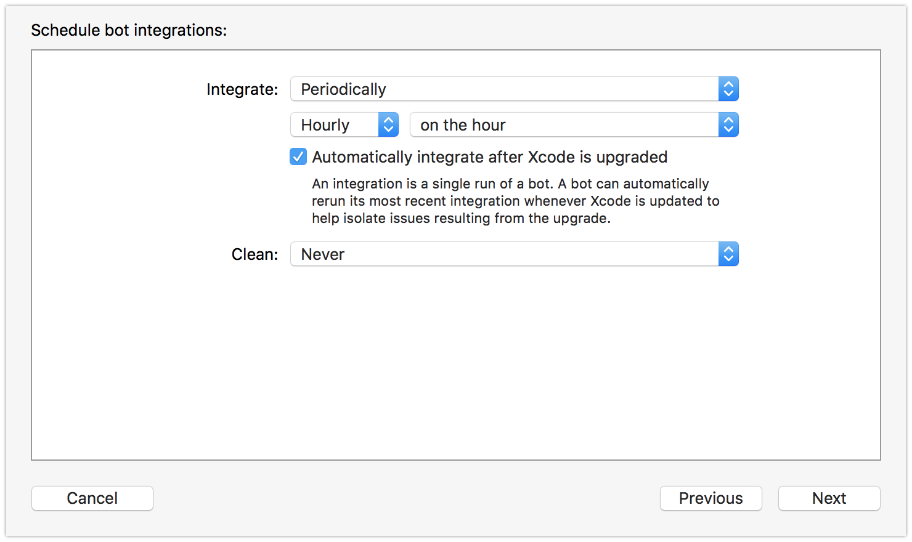
빌드 시간과, Clean시점을 설정할 수 있어서 주기적으로 정해진 시간에 빌드를 진행, 배포할 수 있다.
선택 옵션은 Preiodically, on commit, maually 이 있어서 수동 빌드도 가능하다.
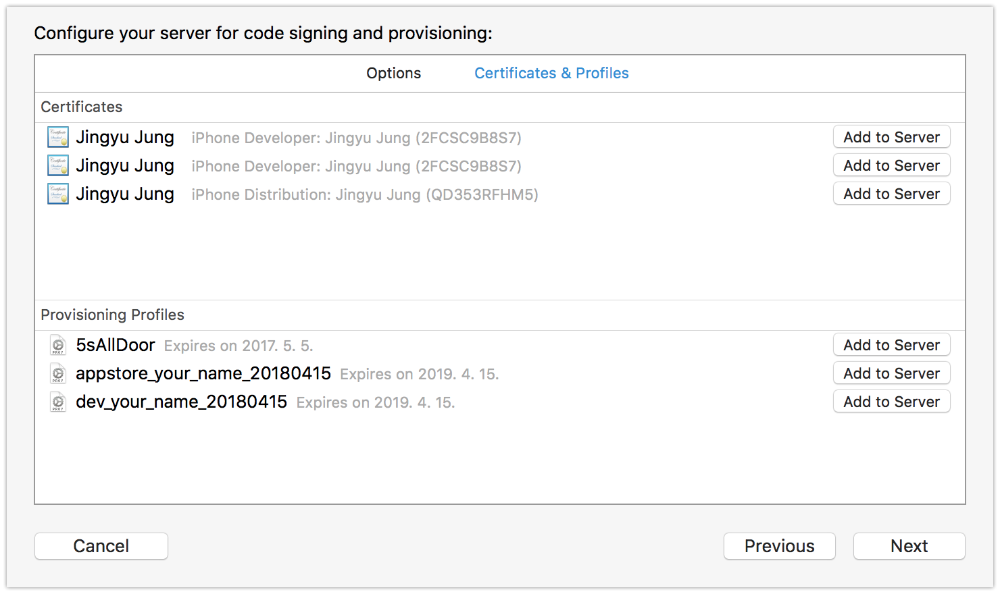여기가 진정한 XCode Server의 꽃이다
XCode에 연결된 계정에서 사용 가능한 인증서와 프로비저닝 목록을 한번에 볼 수 있으며 빌드에 필요한 인증서와 프로비저닝을 선택하여 Add to server 만 선택하면 빌드서버에 자동으로 등록 설치된다.
- Jenkins에서 이 작업이 얼마나 번거로웠는지,,,,,
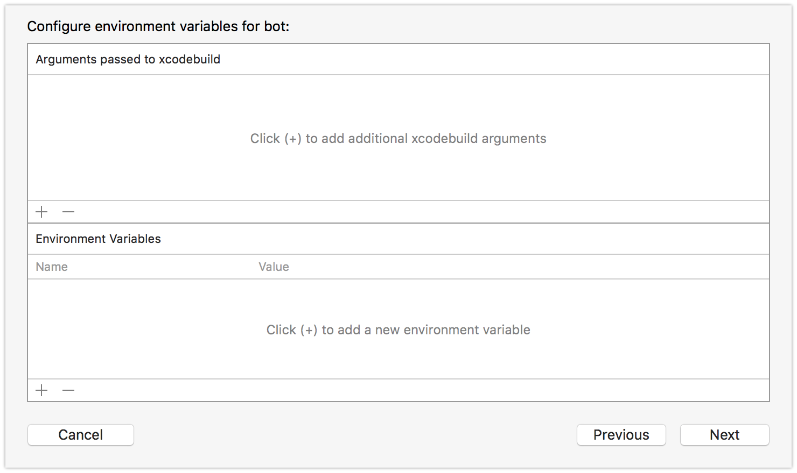
빌드 과정에서 사용할 환경변수를 지정할 수 있다.
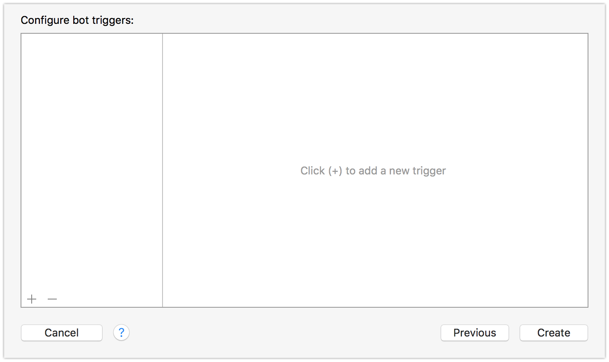
마지막 관문이다.
빌드를 시작할 때 Slack에 보내고 빌드가 끝나면 빌드 파일을 Slack으로 보내고! 이런 작업이 필요한데
바로 여기서 설정 할 수 있다.
왼쪽 하단의 + 버튼을 누르면 다양한 스크립트를 추가할 수 있다.
- 빌드 시작
- 빌드 종료
- 메일 전송
등 다양한 상황이 존재하며, 해당 상황에 적절한 스크립트를 통해 여러가지 기능을 확장 할 수 있다.cocoaPod 을 사용한다면 Pre-Integration 스크립트에 Pod install 을 추가해주자.
끝
Bot을 만들었으면 사용해야지
Bot을 만들었는데 어디에 있는 것일까?!
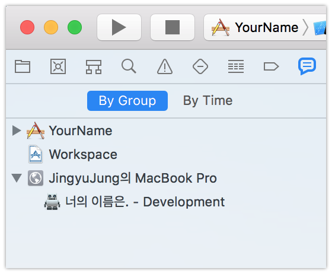얍짠
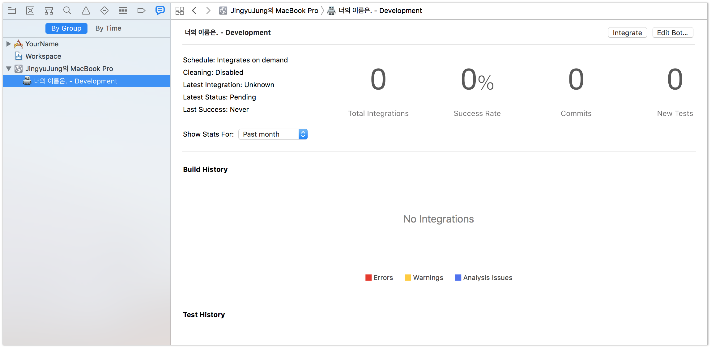
봇의 상세화면이다. 다음의 내용을 확인 할 수 있다.
- 테스트 성공률
- Warning 수
- 이전 빌드보다 추가된 커밋 수
- 이전 빌드 이후 제거된 warning들
- 코드 커버리지
- archive 했다면 archive file
- export 했다면 ipa file
짱이다
빌드를 한번 해보자. 우측 상단의 Integrate 버튼을 눌러보자.
Jenkins vs XCodeServer
Jenkins와 XCodeServer를 사용해보면서 느낀 특징, 장단점은 다음과 같다.
Jenkins
- 장점
- Github과 연동이 잘된다. Hook을 통해 PR, Commit 등 다양한 상황과 연동 가능하다
- 단점
- XCode8 이후로 ipa 추출하는 과정에서 ExportOptions.plist 가 추가적으로 필요하게 되었는데 아직 이를 자동으로 해주는 플러그인이 없다.
- 인증서, 프로비저닝 갱신 과정이 번거롭다.
- 장점
XCodeServer
- 장점
- XCode와의 연동이 최고다. 인증서, 프로비저닝 관리가 가장 깔끔하다.
- 빌드를 위해 별도의 웹 페이지에 접속할 필요가 없다.
- OTA 기능도 지원한다 (근데 사실상 사용 불가… 애플놈들…)
- 단점
- Github과의 연동이 약하다. PR을 통한 Test를 진행하는 프로젝트에서는 바로 적용이 힘들다.
- 아직 안정화가 될 되었다. 작은 버그들이 우수수수….
- 장점
결론적으로, XCode Server 를 선택해서 사용중이며 만족하면서 사용하고 있습니다~!
그 외의 iOS CI 툴
fastlane이라는게 있답니다..!